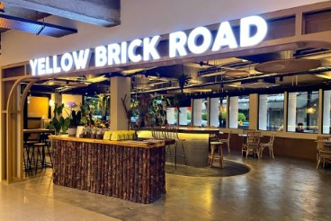

Cafe · Western
Yellow Brick Road
The Five, Bukit Damansara
A lively cafe for brunch, coffee and desserts. It is a relaxed choice for friends who want to catch up over a hearty meal or enjoy a sweet treat.
Popular picks: Big Breakfast Bash (est. RM32), pancakes (est. RM28)
RM20–RM40 per person
Reservation deposit: RM20 per table
Book this restaurant